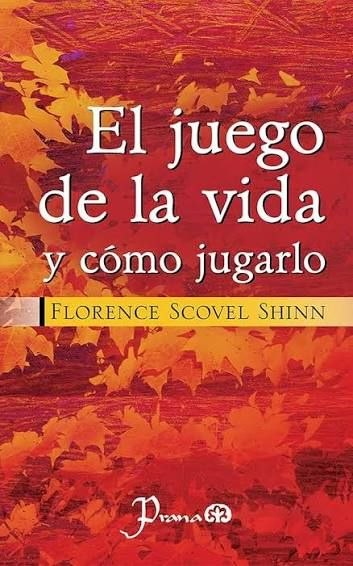
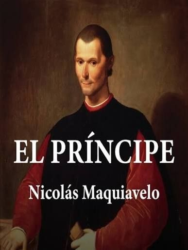
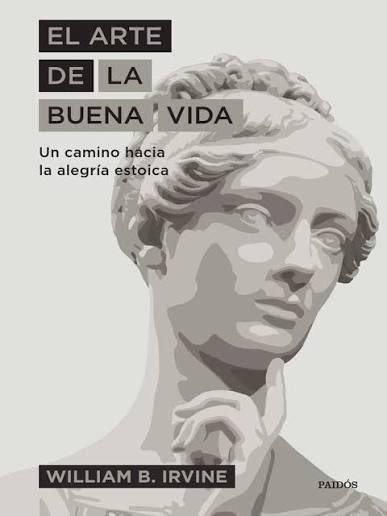

El juego de la vida y como jugarlo
Florence Scovel Shinn
La mayoría de la gente considera la vida como una batalla, pero en realidad es sólo un juego para que nuestras almas aprendan entreteniéndose. El miedo, el sufrimiento y la angustia no son necesarios para este aprendizaje; son una creación de la mente humana que, inconscientemente, viola las leyes espirituales. .
Ver más

El Principe
Nicolas Maquiavelo
El príncipe es un tratado político del siglo XVI del diplomático y teórico político italiano Nicolás Maquiavelo. Según la correspondencia del autor, una versión parece haber sido distribuida en 1513, usando el título en latín De Principatibus.
Ver más

El Arte de la Buena Vida
William Braxton Irvine
“El arte de la buena vida” es un manual de sabiduría práctica que invita a reflexionar sobre cómo vivir con más plenitud. No promete una receta mágica, sino un conjunto de herramientas para enfrentar la vida con inteligencia y equilibrio. Es ideal para quienes buscan claridad mental y hábitos que reduzcan la infelicidad en lugar de perseguir una felicidad ilusoria.
Ver más